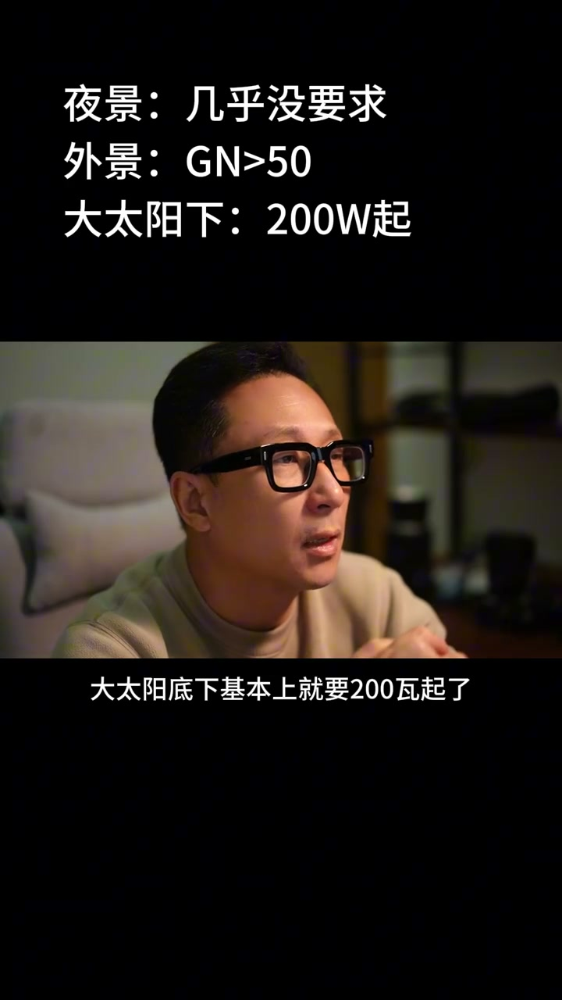
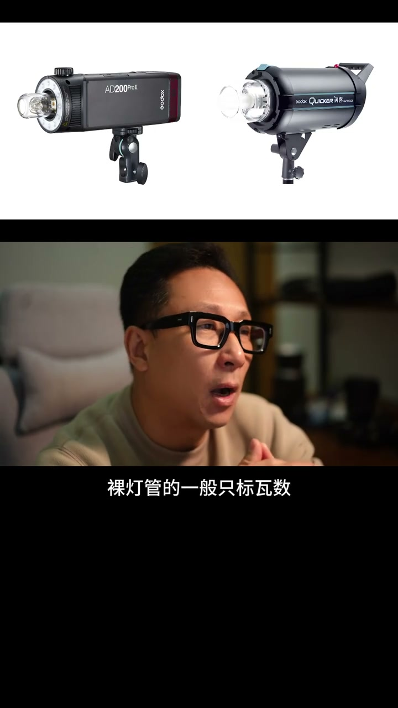

内容要点
[00:00] 买多亮的闪光灯,其实核心的标准只有一个
[00:03] 就是你在多亮的环境下使用
[00:06] 暗的环境下指数可以低一点
[00:08] 夜景、悠暗的室内,几乎4个灯都能用
[00:12] 外景的指数就要高一些,平常也不要低于50的gN
[00:16] 大太阳底下,基本上就要200瓦奇了
[00:20] 顺便说一下,gN值和瓦数是两个不同的概念
[00:24] 但表达的大致是同一个意思
[00:27] 有辨胶功能或固定胶段的
[00:29] 或者说有个灯头的闪光灯,一般主要是标gN值
[00:34] 有时也会标一下瓦数
[00:37] 裸灯管的一般支标瓦数
[00:39] 我之前的视频有聊,有兴趣的可以看一下
[00:42] 再顺便说一句,如果你是裸灯使用
[00:45] 买带有辨胶功能灯头的闪光灯
[00:48] 目前有该功能的闪光灯,一般都是机灵灯
[00:51] 会方便很多
[00:53] 有些人会提到灯光的距离
[00:55] 就是对近人拍,小闪光灯也够用
[00:58] 但我不把距离作为核心的标准,是因为距离有额外的影响
[01:02] 就是光的均匀度,简单说灯光越近,越不均匀
[01:06] 灯光的痕迹越重,灯光越远
[01:08] 光亮度越均匀,自然感越强
[01:11] 看这张势力图,我们不光一般都会高于人脸
[01:14] 否则就是底光
[01:15] 所以你拍一个肖像,可以距离在1米以内
[01:19] 妹子蹲着坐着,你可以在2米左右
[01:22] 但是你要拍站着的全身,可能就得在3米之外会好一些
[01:26] 如果妹子个子越高,这个距离可能就需要越远
[01:29] 当然需要的灯的功率就越高
[01:31] 所以在多近的距离拍,很大程度上要考虑光的均匀度
[01:35] 有些朋友用指数很小的闪光灯拍全身,离得很近
[01:39] 拍出来就会觉得脸亮了,腿还是黑的
[01:42] 而且全身的衰减感觉特别明显
[01:44] 就像有个暗角,很不舒服
[01:46] 很多摄影师都不知道,距离是闪光灯打出来的光的效果
[01:51] 是不自然的一个非常重要的参数
[01:53] 光位的自由跟机位的自由,一样很重要
[01:57] 所以说我们一般用离机闪
[01:58] 如果你的闪光灯是固定在相机上
[02:01] 那你的光位可能就会受到机位的限制
[02:04] 就没有办法像我上面说的那样
[02:06] 在不同的拍摄取景下,调整不同的距离
[02:10] 我这里还没有提到过闪光灯使用复健
[02:13] 比如深拋,柔光箱等等
[02:15] 复健对光的衰减影响很大
[02:17] 这时候的标准就是有一个
[02:19] 在你能负担得起的情况下,功率越高越好
[02:23] 另外,既然你已经玩到复健了
[02:25] 也别太在乎灯的重量了
[02:27] 反正都轻松不了

